Esquinas I–X
Series of ten black-and-white drawings, acrylic on canvas, 100 × 100 cm each, made of lines crossing in simultaneous perspectives. Shown in the exhibition A Pele do Mundo, Futuros – Arte e Tecnologia, 2023.
- Materials
- Acrylic on canvas
- Dimensions
- 10 pieces, 100 × 100 cm each
- Venue
- Futuros – Arte e Tecnologia, Rio de Janeiro
- Exhibition
- A Pele do Mundo (2023)
- Curated by
- Michael Asbury
- Photos
- Pedro Tressi
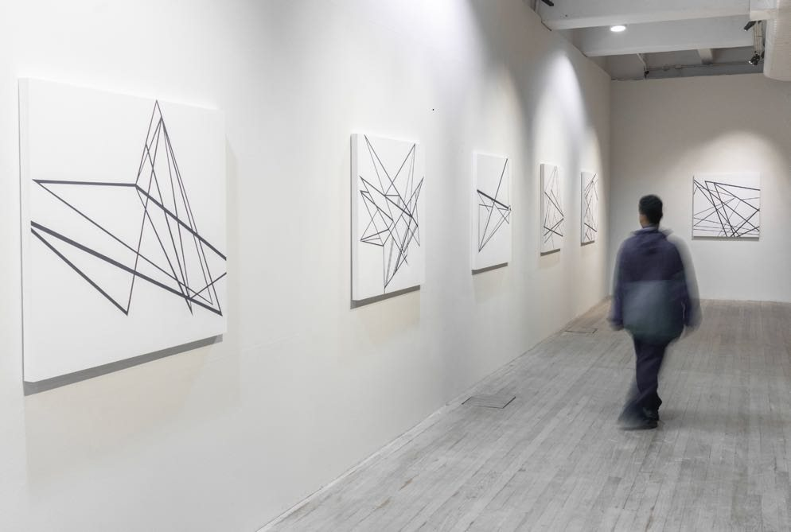
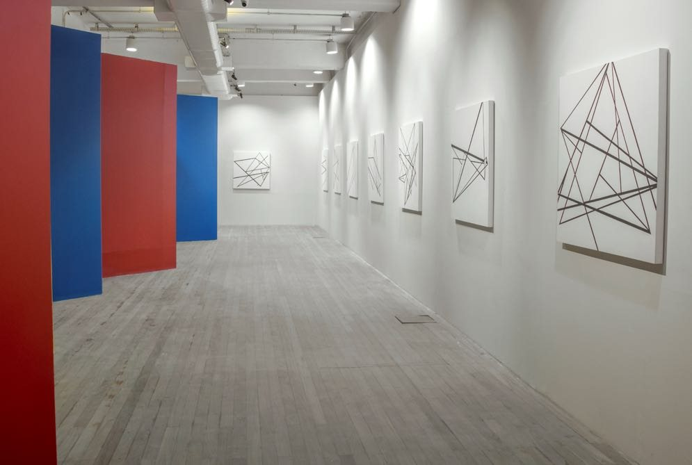
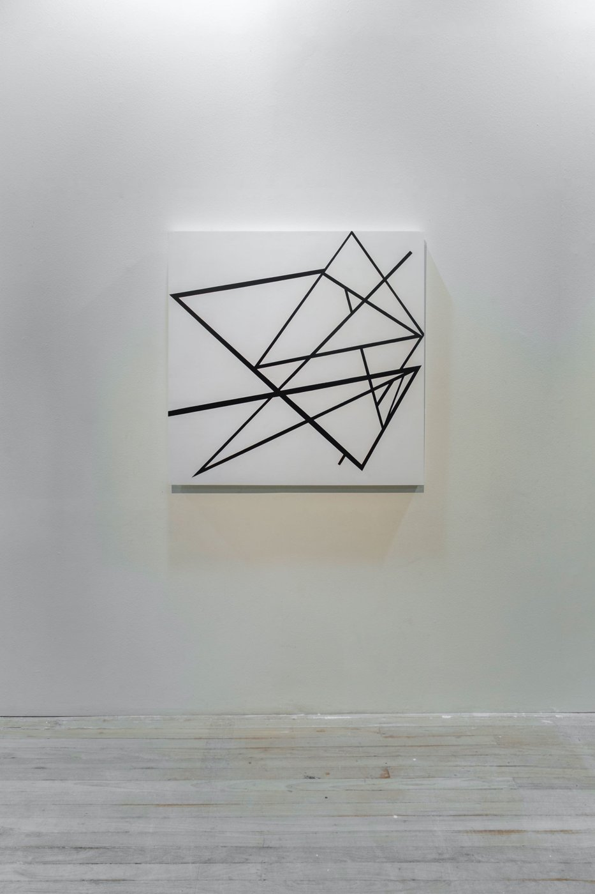
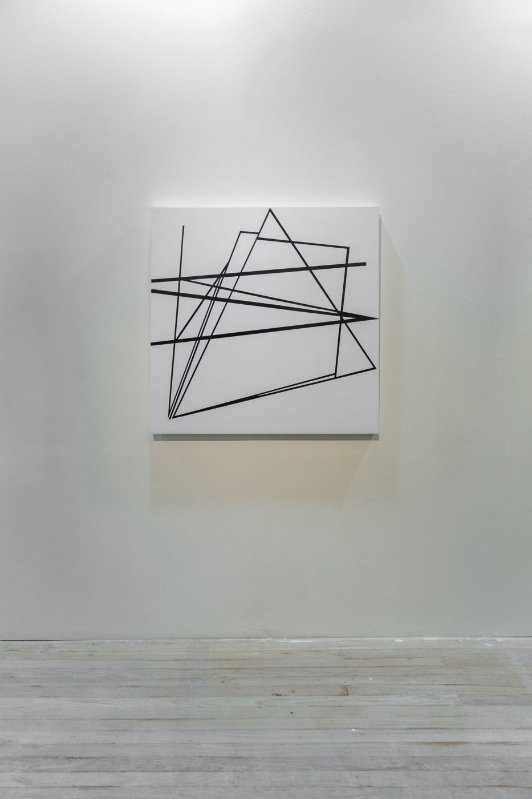
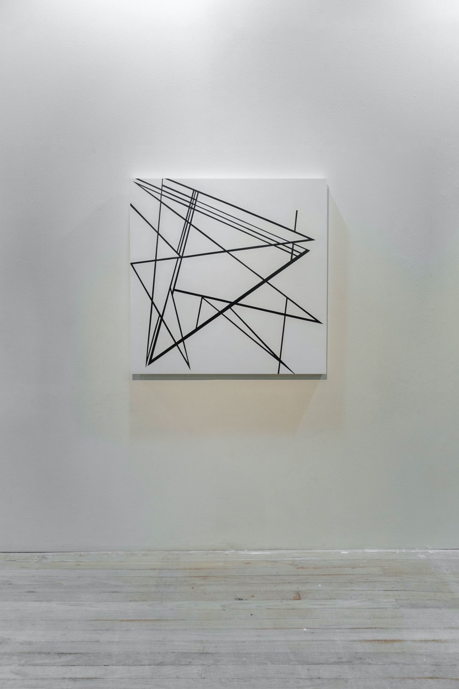
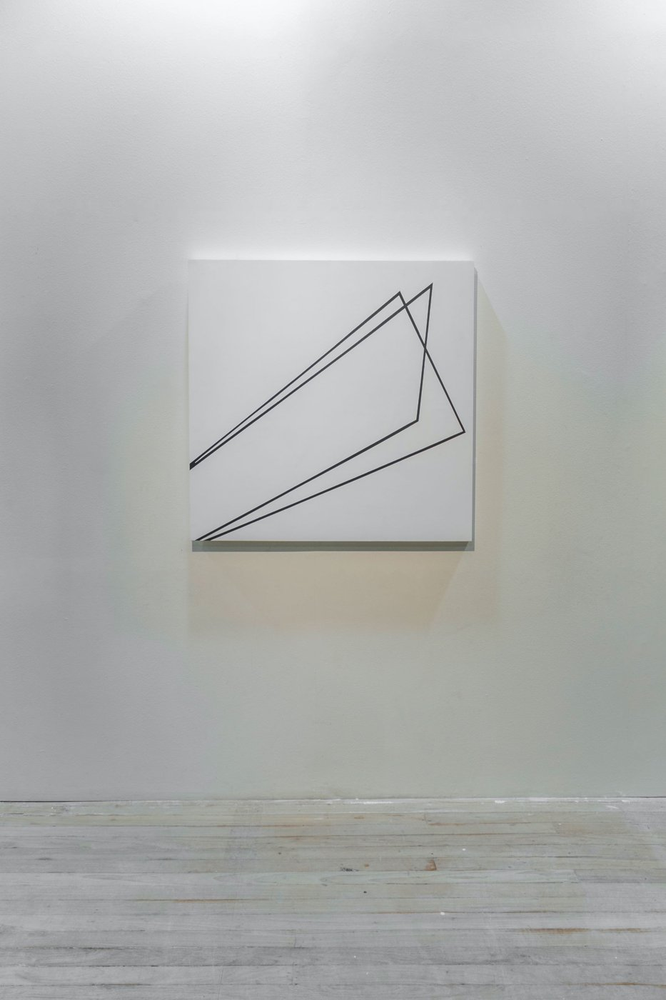
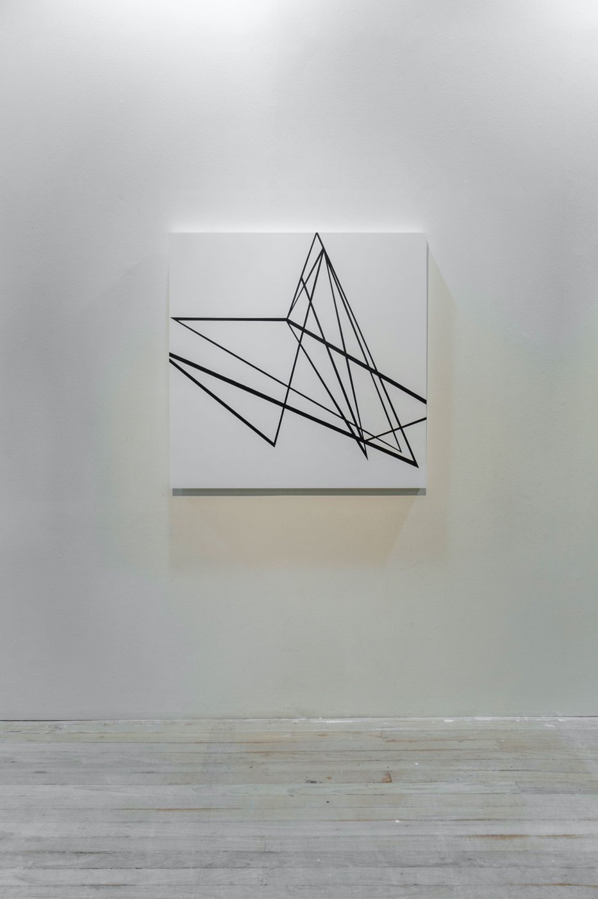
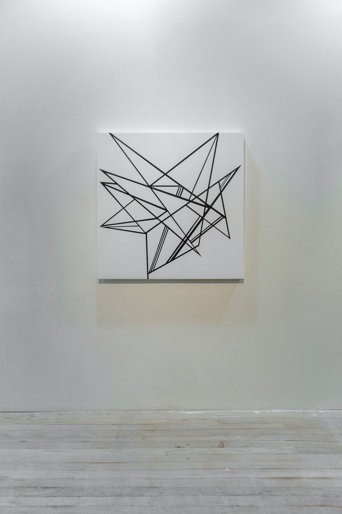
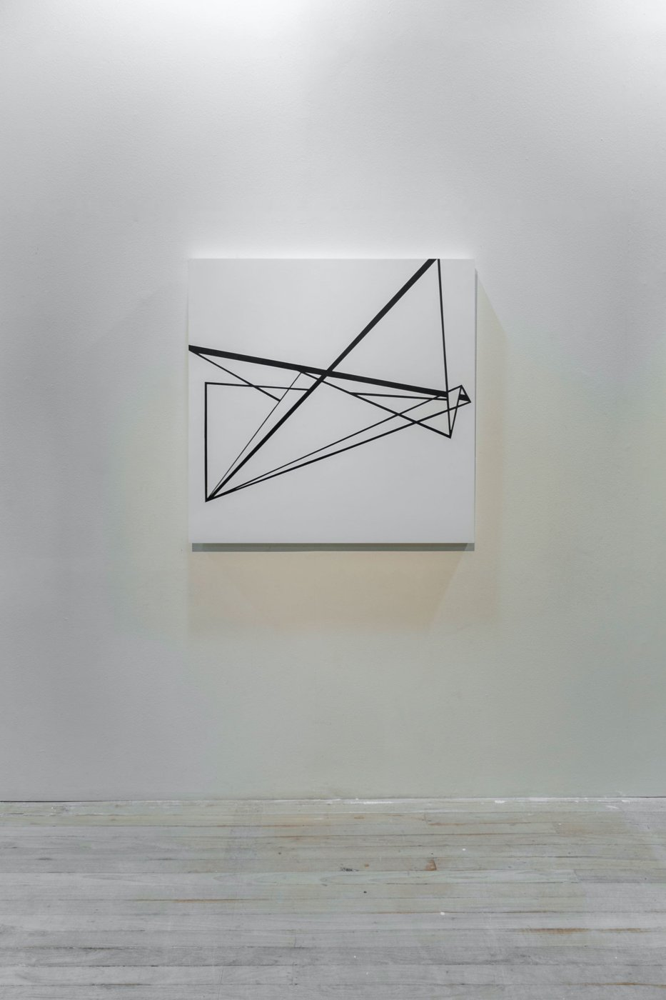
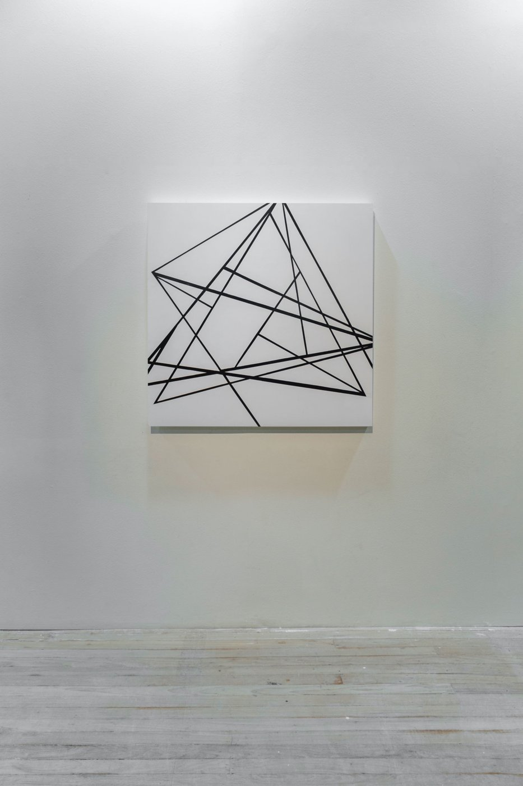
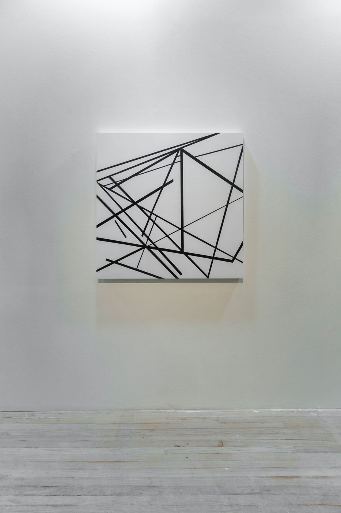
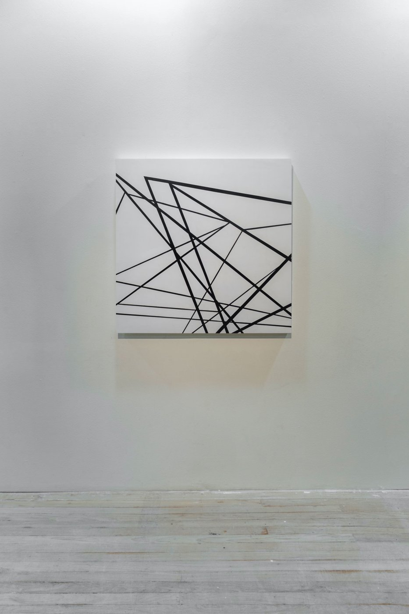